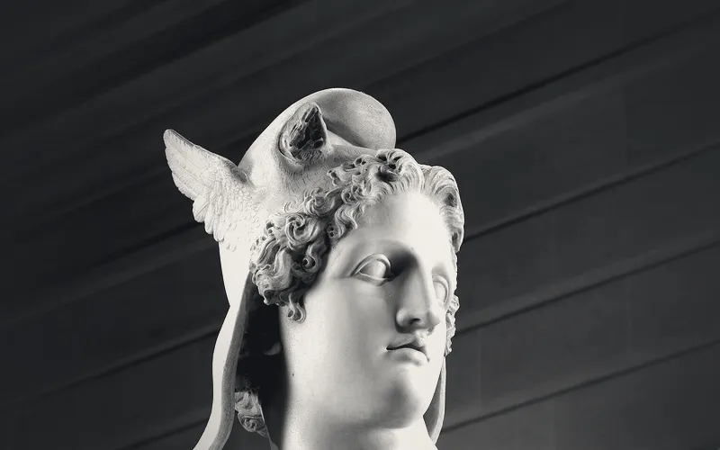

A fundação por Perseu
Pausânias conta que Perseu fundou a cidade no lugar onde caiu a ponta da bainha da sua espada, chamada mykes em grego. Os ciclopes teriam erguido as muralhas.
Conhecer Perseu → LUGAR
LUGAR
Μυκῆναι
Cidade fortificada do Peloponeso, lar do rei Agamêmnon, chefe dos gregos na Guerra de Troia. As muralhas são tão grandes que os antigos diziam ter sido erguidas por ciclopes.
Foi para um rei de Micenas, Euristeu, que Héracles me levou. Os pintores de vasos mostram o rei escondido dentro de um jarro, com medo de mim. Eu só estava parado.
Pausânias conta que Perseu fundou a cidade no lugar onde caiu a ponta da bainha da sua espada, chamada mykes em grego. Os ciclopes teriam erguido as muralhas.
Conhecer Perseu →Rei de Micenas, Agamêmnon comandou todos os reis gregos na guerra contra Troia. Homero chama a sua cidade de “rica em ouro”.
Homero, Ilíada, canto IIDepois de dez anos, Agamêmnon voltou vitorioso e foi morto em casa pela esposa, Clitemnestra, que não perdoou o sacrifício da filha Ifigênia.
Ésquilo, Agamêmnon“Os que habitavam Micenas, a cidade bem construída, a esses comandava, com cem navios, o poderoso Agamêmnon.”
Homero, Ilíada, canto II (tradução livre)

Τροία
Cidade do rei Príamo, cercada pelos gregos por dez anos.

Περσεύς
Filho de Zeus e Dânae, cortou a cabeça da Medusa.

Ἡρακλῆς
Filho de Zeus e Alcmena, cumpriu os doze trabalhos. No último, me levou do Submundo.